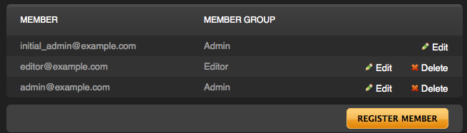

Members
Who can use MojoMotor on your site is controlled by your site membership. Your first member will be whomever installed the site. They are an Admin member (see below). Subsequent members can be added or removed as needed.
Member Groups
There are 2 types of members available to you, Admins and Editors. Admin members have full access to all of your MojoMotor site, and are not restricted in any way. Editors are members who need to be able to access and change editable and global regions, and add Pages, however they have no access to the other functions of your site. Editors are content custodians.
Important concept: Admin members have full access to all features of MojoMotor. Editors can access the MojoMotor Editor on each page, and edit pages, but do not have access to the other features of MojoMotor such as Layouts.
Current Members

All members defined within MojoMotor are available simply by choosing the members icon from the toolbar.
Member Actions
Adding a Member
From the member tab, simply select the "ADD MEMBER" button.
Editing a Member
To edit an existing member, simply select the "edit" link () beside the layout you wish to edit.
Deleting a Member
To delete an existing member, simply select the "delete" link () beside the member you wish to delete. You will be prompted to confirm your deletion to prevent accidental removal. Please note that the initial member (ie: the account created during installation) cannot be removed.
Anatomy of a Member
MojoMotor uses email for logging in, as well as sending activation notices during account creation (if that option is selected).
Member Group
Controls if this member belongs to the Admin or Editor group.
Password
Password changing requires knowing the old password for security purposes. If a member has forgotten their password, it can be reset via the "forgotten password" functionality of the login page.
Edit Mode
The MojoMotor Editor can either run in "Graphical" (commonly referred to as "WYSIWYG") mode, or allow direct editing of the underlying HTML code via "Plain Text" mode. This setting controls what mode will be loaded by default for a given member, however any member can toggle between the two modes at any time.